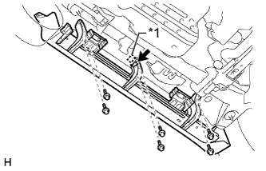

REAR STABILIZER BAR > REMOVAL |
| 1. REMOVE SIDE STEP ASSEMBLY LH |
|  |
Disconnect the connector and detach the clamp.
| *1 | Clamp |
Remove the 6 bolts.
 |
Put protective tape around the side step.
| *1 | Protective Tape |
Using a T30 "TORX" socket wrench, remove the 2 screws.
Remove the 3 screws.
Detach the 6 clips and remove the side step.
| 2. REMOVE STABILIZER CONTROL VALVE PROTECTOR |
 |
Remove the 2 bolts and stabilizer control valve protector.
| 3. DRAIN SUSPENSION FLUID |
 |
Loosen the bleeder plug on the stabilizer control with accumulator housing assembly and drain suspension fluid.
Tighten the bleeder plug.
| 4. REMOVE REAR STABILIZER LOWER BRACKET |
 |
Remove the 4 bolts and 2 rear stabilizer lower brackets.
| 5. REMOVE REAR STABILIZER BAR SUB-ASSEMBLY |
 |
Remove the 2 bolts, 2 nuts and rear stabilizer bar.
Remove the 2 stabilizer bushes from the rear stabilizer bar.
| 6. DISCONNECT REAR STABILIZER CONTROL TUBE ASSEMBLY |
 |
Remove the 2 union bolts and 2 pressure port gaskets and disconnect the rear stabilizer control tube from the rear stabilizer control cylinder.
| 7. REMOVE REAR STABILIZER CONTROL CYLINDER |
 |
Remove the bolt, nut and rear stabilizer control cylinder.
Remove the 2 bleeder plug caps from the rear stabilizer control cylinder.
| 8. REMOVE REAR STABILIZER LINK ASSEMBLY |
Remove the bolt, nut and rear stabilizer link assembly.